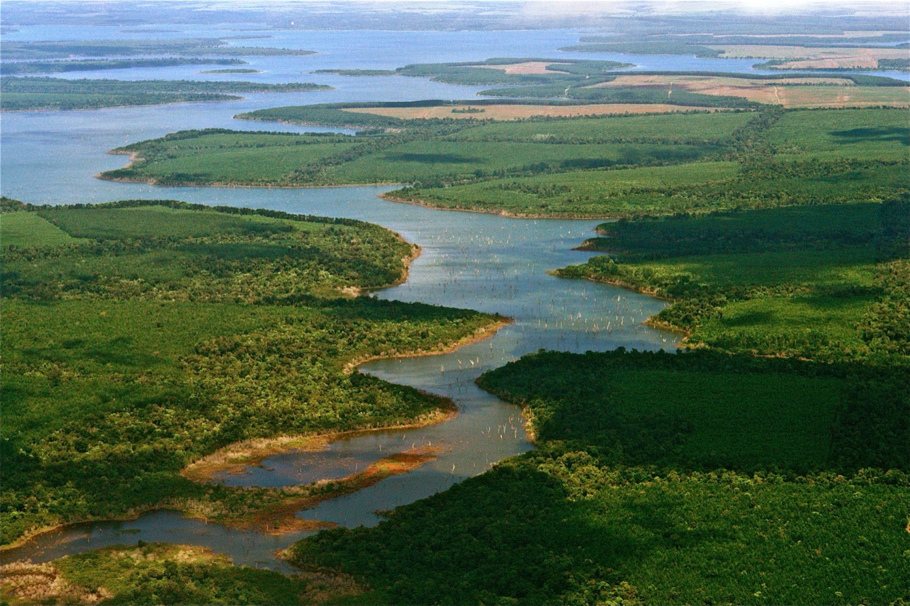

Wikimedia Commons
01
Recomendado
Esteros del Iberá, Corrientes
Doméstico · 835 kmVuelo RT~3h30
USD/persona150–280
AutoEsencial
Días netos~8,5/9
Traslados y distancias
- Aeropuerto Posadas o Corrientes → Carlos Pellegrini: ~2h30-3h30 en auto (tramos de ripio)
- Safaris dentro de la reserva: lancha 2-3h + caminatas cortas
Directo a Posadas o Corrientes, sin escalas.
A favor
- Fauna espectacular: yacarés, carpinchos, aves
- Naturaleza única en Argentina, casi sin gente
- Fin de verano: buen nivel de agua para el avistaje
En contra
- Tramos de ripio en el acceso
- Alojamiento limitado, reservar con antelación